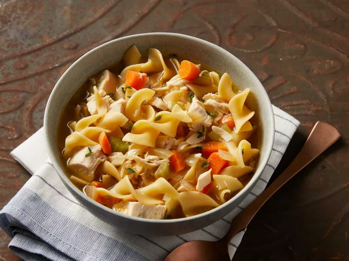
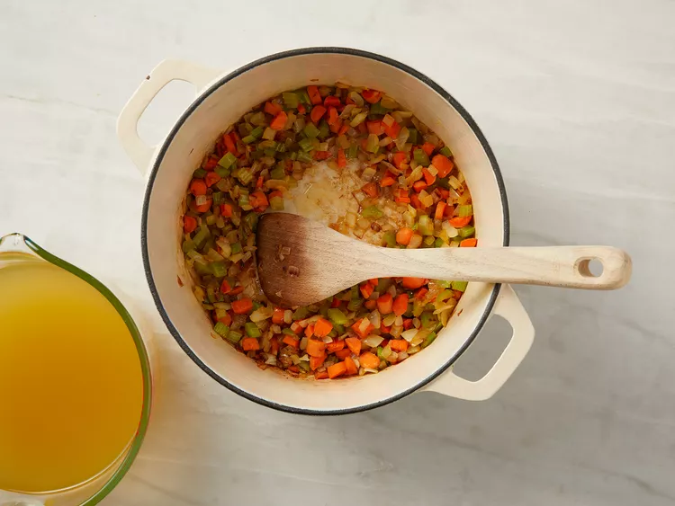
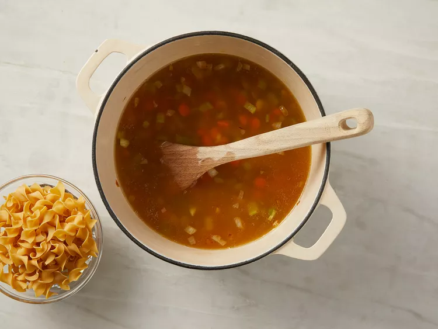
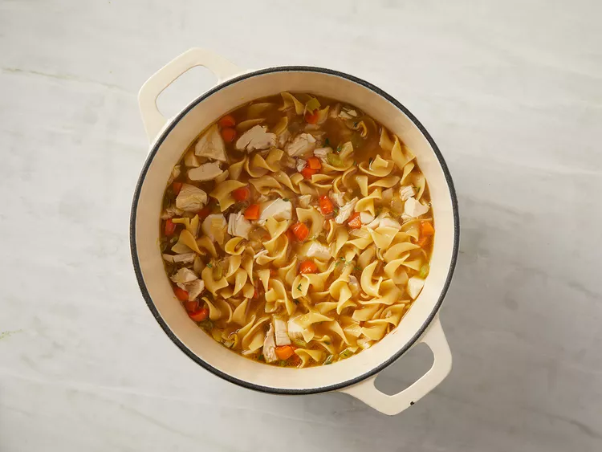

Chef John's Homemade Chicken Noodle Soup

This homemade chicken noodle soup is soul-warming and deliciously
simple — just chicken and noodles. What makes it so good is the homemade roasted chicken stock.
Ingredients
- 1 tablespoon butter
- ½ cup diced carrot
- ½ cup diced onion
- ½ cup diced celery
- ¼ teaspoon fresh thyme leaves
- 1 pinch salt
- 2 tablespoons melted chicken fat
- 2 quarts roasted chicken broth (see footnote for recipe link)
- 4 ounces uncooked wide egg noodles
- 2 cooked boneless chicken breast halves, cubed
- 1 pinch cayenne pepper (Optional)
- salt and ground black pepper to taste
Steps
- Melt butter in a large soup pot over medium heat. Stir in carrot, onion, celery, thyme, and salt.
Add chicken fat; cook and stir until onions turn soft and translucent, 5 to 6 minutes.
- Overhead of carrots, onions, celery, thyme, and salt cooking in a pot with a cup of broth off to the side.

Stir in roasted chicken broth and bring to a boil. Season with salt, if necessary.
- Overhead of carrots, onions, celery, thyme, salt, and broth cooking in a pot with a cup of noodles off to the side.

Stir in egg noodles; cook until tender, about 5 minutes.
- Add cooked chicken breast meat; simmer until heated through, about 5 minutes. Season with cayenne pepper, salt, and black pepper.

- Serve hot and enjoy!
Source:https://www.allrecipes.com/recipe/8665/braised-balsamic-chicken/
Home